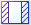
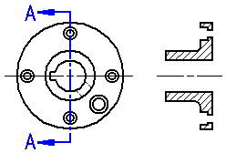

Section View command (Draft environment)
The Section View command

creates a section view of a 3D part or assembly model from a selected cutting plane.You can use the options on the command bar to define the type of section view you want. For example, you can create:
|
Simple Section Views
|
|
Revolved Section Views
|
|
Section-Only (Thin-Section) Views  |


How do I
Create a section viewCreate a revolved section view
Create a thin-section view
Change section view type
Scale a section view
Set rib hatching in section views
Show or hide cutting plane lines in section views
Learn more
Section viewsModifying section views
Section view and cutting plane captions
Formatting fill and hatch patterns in section views
Look up more details
Section View command barOverride Rib Hatching dialog box